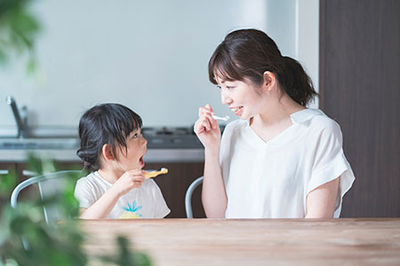

- TOP
- 小児歯科・妊娠中の歯科治療

大阪府高槻市の歯医者「河原歯科クリニック」は、お口全体を一つの単位として考え、長期的な立場で、お口まわりの健康をずっと守るための治療や予防に力を入れています。そのために大切なのは、口腔ケアの意識です。お口の2大トラブルの虫歯や歯周病は予防が可能な病気で、そのためには毎日のセルフケアが欠かせません。その習慣を子どものころから身につけておけば、お口の健康を守りやすく、年齢を重ねてもずっとご自分の歯で違和感なく過ごせる可能性が高まるのです。
そのため、当クリニックでは子どものお口の健康サポートとともに、さらにお腹の中にいるころからの口腔ケア、つまり妊婦さんのお口の健康も大切だと考えています。健康を守るためのポイントをアドバイスしますので、気になる方はお気軽にご相談ください。
小児歯科～予防を中心に子どものお口の健康をサポートします
乳歯や生えたての永久歯は、歯の表面を覆っているエナメル質が大人の歯に比べて薄いうえ、抵抗力が低いために「虫歯になりやすい」という特徴があります。また、いったん虫歯にかかってしまうと、その進行も早いので注意が必要です。乳歯が虫歯になると、将来生えてくる永久歯が虫歯になりやすくなったり、歯並びが乱れてしまったりすることも……。そうならないように、子どものころから虫歯予防をすることが大切です。
大阪府高槻市の歯医者「河原歯科クリニック」は、虫歯予防を中心に、お子様のお口の健康を守ります。歯が生えたときから虫歯のリスクが生まれますので、お口まわりのお悩みはお気軽にご相談ください。
小児歯科とは？
小児歯科は、乳歯が生えはじめたばかりの赤ちゃんから、すべての歯が永久歯に生え替わるまでのお子様を対象とした歯科診療メニューです。大人と子どもの口腔内にはそれぞれ異なる特徴があるため、子どもの歯は小児歯科での専門的な診療が必要です。
小児歯科の専門家がお子様の診療を行います
当クリニックには、日本小児歯科学会認定の小児歯科専門医が在籍しています。成長過程にある子どもは口腔内の成長も著しいので、それぞれの成長度合いに合わせた診療が欠かせません。その成長度合いを見極め、身体だけでなく精神の発達も考慮した診療方法をご提供するための知識と経験を持っています。
当クリニックでは月1回、小児歯科の専門医の診療日を設けております。その日は、重点的にお子様のお口の健康をサポートいたしますので、日程をお問い合わせください。
虫歯のない口腔環境に導くためには、子どものころからのケアが大切です。お子様の年齢や生活環境、習慣に合わせて、さまざまなアドバイスをいたします。そこには、ブラッシングの方法や食習慣も含まれます。また、歯科医院でできるシーラントやフッ素塗布などの予防処置も必要に応じて行い、健康な口腔内の維持をサポートいたします。
お子様を「歯医者嫌い」にさせないために
歯科医院への通院や治療に苦手意識を持っている大人は少なくありません。こうした「歯医者嫌い」の方は、虫歯や歯周病の自覚症状があっても、歯医者に行きたくないためについついガマンや放置をしてしまい、治療の遅れからお口のトラブルが悪化しがちです。もし、お子様が歯医者嫌いになってしまったら、将来のお口の健康に大きなリスクを負うことになります。
大阪府高槻市の歯医者「河原歯科クリニック」では、お子様の気持ちを尊重しながら診療いたします。嫌がるお子様を、無理に押さえつけて診療することはありませんのでご安心ください。小児歯科をスムーズに受診していただくには、親御様のご理解とご協力が不可欠です。生涯にわたってお子様が虫歯や歯周病などで困らないように、「健康な歯」を一緒に育てていきましょう。
小児歯科診療を「成功」
させる5か条
- 「歯医者さんは怖い」というイメージを植えつけないよう、普段の会話に注意しましょう
- 歯科医院での「痛かった思い出」や「注射の話」などは、お子様の前では控えてください
- 歯医者さんはお口を健康にしてくれる“いいところ”だということを丁寧に伝えましょう
- きちんとお子様の話を聞いてくれる、相性のいい歯医者さんを選んでください
- うまくいかなくても叱らず、治療後はしっかりほめてあげましょう
小児歯科メニュー
ブラッシング指導
-
毎日のブラッシングは虫歯予防に欠かせません。当クリニックでは、お子様の年齢や歯の生え方などに合わせて、正しいブラッシング方法を指導します。親御様には仕上げ磨きのコツもお伝えします。
シーラント
-

奥歯の噛む面にある溝は深く細かいため、ブラッシングでは汚れを落としにくい場所です。そこをあらかじめレジン（歯科用プラスチック）で埋めて、虫歯を防ぐ処置がシーラントです。
フッ素塗布
-
歯質を強化するはたらきがあるフッ素をエナメル質に塗布します。歯の再石灰化も促しますので、定期的なフッ素塗布は、とくに乳歯や生えたての永久歯の虫歯予防に有効です。
小児矯正とは？
小児矯正は現在の歯並びを整えるだけでなく、将来永久歯が生えたときにきれいに歯が並ぶスペースの確保が目的です。顎の成長する力を利用できる子どものころから矯正治療をはじめれば、永久歯の抜歯をせずに歯並びを整えられる確率が大幅に高まります。
当クリニックは信頼のおける矯正専門医と連携しており、責任を持って、お子様の歯並びや噛み合わせの観察・治療を行っています。お子様のお口に不安なことや疑問などがありましたら、いつでもお気軽にご相談ください。
妊娠中の歯科治療～妊婦さんとお腹の赤ちゃんのお口の健康のために～
妊娠するとホルモンバランスが変化したり、唾液の分泌量が減少したり、「つわり」がはじまったりするため、お口の環境が悪化して虫歯や歯周病などにかかりやすくなります。妊娠中の虫歯や歯周病は、赤ちゃんにも影響を与えてしまうのをご存じでしょうか？ 妊娠中の歯周病「妊娠性歯周炎」はお腹の赤ちゃんに悪影響を与えることもありますので、とくに注意が必要です。
「妊娠中は歯の治療を受けられない」と思っている方も多いようですが、実際はそんなことはありません。体調が安定してくる時期（妊娠中期）を見はからって、大阪市高槻市の歯医者「河原歯科クリニック」へお越しください。
妊娠安定期は歯科診療を受けましょう
妊娠するとさまざまな理由により、虫歯や歯周病を発症しやすくなります。しかし、それを放っておくと、妊婦さんだけでなくお腹の赤ちゃんの健康も心配です。そのため、妊娠を予定している方や妊娠安定期の方には歯科診療がおすすめです。妊娠初期や出産間近は体調が変化しやすいので、妊娠前や安定期に通院して治療や予防処置を受けましょう。
環境にもよりますが、出産すると自分のことよりも子どもが優先になり、自分に時間がかけられなくなります。外出するにも子どもを預けなければならないため、医者にも歯医者にもなかなか行けなくなる可能性が高いでしょう。その点からも、できるだけ安定期に歯科検診を受けることが大切です。
また、妊娠すると親知らずが痛くなる人も少なくありません。しかし、妊娠中の抜歯は、あまりおすすめできませんので、リスク回避のためには妊娠前に抜いておくことも大切です。
当クリニックでは、子どもがいる女性の歯科医師も在籍していますので、心配なことがあれば遠慮なくご相談ください。
虫歯は大人から感染します
生まれたばかりの赤ちゃんのお口の中には、虫歯菌は存在しません。生活をしているうちに、近くにいる大人（おもに家族）から菌をもらってしまうのです。虫歯菌の感染がなるべく遅いほうが、「将来虫歯になりにくい」ことが分かっています。
赤ちゃんを虫歯から守るために
虫歯菌の感染を遅らせるために、親御様やご家族にできることをご紹介します。
- 赤ちゃん専用のスプーンやお箸、お皿を用意し、共有はやめましょう
- 家族全員が虫歯を治療して、お口の衛生管理に努めましょう
- 歯が生えたら、歯科医院でフッ素塗布などの予防処置をしてもらいましょう
- 歯が生えたら、食後にブラッシングをしたり、ガーゼなどで拭いたりしてあげましょう
妊娠中の歯科診療に適している時期
「安定期」といわれる妊娠5～8ヶ月くらいが、歯科診療に適している時期です。特別な治療は除きますが、通常の歯科治療は問題なく受けていただけます。とくにトラブルがなくても、この時期に一度検診を受け、お口の状態を整えておくことをおすすめします。
妊娠初期である1～4ヶ月は切迫流産を起こしやすい時期です。また、妊娠9ヶ月～臨月はいつ陣痛が起きてもおかしくない時期です。どちらのタイミングも急を要する場合以外は、歯科診療は控えたほうがよいでしょう。
赤ちゃんを虫歯から守るために
レントゲン撮影は適切な治療を行ううえで必要です。しかし、妊娠中のレントゲン撮影を気にされる方も多くいらっしゃいます。妊娠中の方は、撮影前にその旨をお伝えください。被曝量はとても少ないので基本的には問題ありませんが、撮影を可能なかぎり抑えたり、時期をずらしたりと、できるかぎり負担を軽減する対応をいたします。
薬剤について
妊娠中の薬の服用についても、気になる方は少なくないでしょう。薬を使う診療は妊娠安定期に行い、その際にも使う薬剤には十分気をつけますのでご安心ください。基本的に、薬はやむを得ない場合にのみ使用し、妊婦さんが通っている産婦人科の先生に確認を行います。適切な使用時期や使用量、使用期間を十分考慮し、妊娠中や授乳中でも安全に使用できる抗生物質、炎症を抑える消炎鎮痛剤を選びますのでご安心ください。
体勢について
妊娠中のお腹が大きい時期は、治療チェアであおむけになる体勢がつらい方もいらっしゃいます。少しでも苦しいと感じたときにはお知らせください。背もたれを少し起すなどの工夫をしながら治療いたします。また、治療の途中で気分が悪くなることもあります。その際には、休憩を入れながら少しずつ治療いたしますので、遠慮せずにお知らせください。
妊娠中のお口のケアについて
虫歯や歯周病にかかりやすい妊娠中は、とくにお口のケアに気を配っていただきたい時期です。とはいえ、実際はなかなか難しいことも多いでしょう。つわりがあると、歯ブラシを口に入れることさえできない方もいらっしゃいます。
しかし、口腔ケアを怠って妊娠性歯周炎にかかってしまうと、その歯周病菌の影響により、早産や低体重児出産のリスクを高めてしまいます。そうならないよう、妊娠中期に入ったら予防のための検診を受けることをおすすめします。
つらいときは､毎日のケアに一工夫を
- 歯磨き粉の香料が気になるときは、歯磨き粉なしでもいいのでブラッシングをしましょう
- 歯ブラシを口に入れるのもつらい場合は、口をゆすぐだけでも効果があります
- 口をゆすぐ際は、水やお湯だけでなく、緑茶もおすすめです